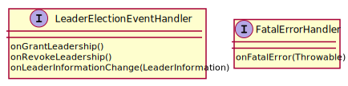

FLINK 选举机制
flink HA 有两种实现, ZooKeeper 和 Kubernetes, flink 对两者进行了封装, 定义如下
// 选举服务
interface LeaderElectionService {
// 启动选举
start(LeaderContender)
// 停止选举
stop()
// 确认主权
confirmLeadership(..)
}
// 参选者
interface LeaderContender {
// 获取主权后回调
grantLeadership(..)
// 失去主权后回调
revokeLeadership()
// 选举异常回调
handleError(Exception)
}
中间层抽象
LeaderElectionService 默认实现类是 DefaultLeaderElectionService, 通过创建 LeaderElectionDriver 进行选举, 选举成功后回调 LeaderElectionEventHandler, 失败后回调 FatalErrorHandler, 这两个 Handler 内部调用 LeaderContender 的方法

ZooKeeper 实现
LeaderElectionDriver 的 ZooKeeper 实现是 ZooKeeperLeaderElectionDriver, 内部使用 Curator 框架提供的 LeaderLatch 和 NodeCache 机制实现选举,
public ZooKeeperLeaderElectionDriver(..) {
// 选举成功, 回调 isLeader, 否则回调 notLeader
leaderLatch = new LeaderLatch(client, checkNotNull(latchPath));
// 监听变化, 回调 nodeChanged
cache = new NodeCache(client, leaderPath);
// 选举异常, 回调 unhandledError
client.getUnhandledErrorListenable().addListener(this);
leaderLatch.addListener(this);
leaderLatch.start();
cache.getListenable().addListener(this);
cache.start();
}
public void isLeader() {
leaderElectionEventHandler.onGrantLeadership();
}
public void notLeader() {
leaderElectionEventHandler.onRevokeLeadership();
}
public void unhandledError(String message, Throwable e) {
fatalErrorHandler.onFatalError(..);
}References
-
[Flink之主从选举] https://www.modb.pro/db/107324